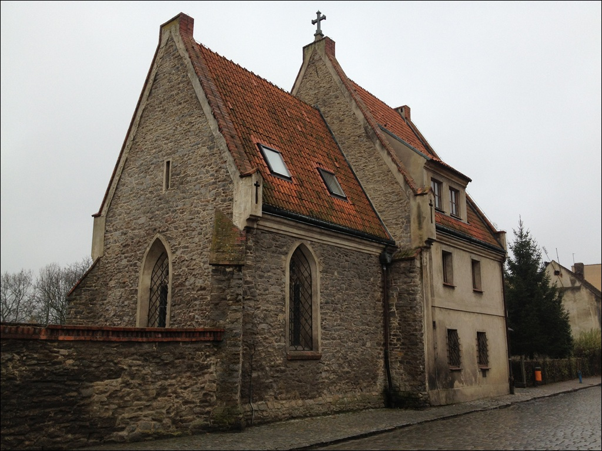

Dawna gotycka kaplica szpitalna ¦w. Jerzego z XIV wieku
Kaplica p.w. oew. Jerzego z 1351r. zbudowana przy szpitalu miejskim istniej±cym w Strzelinie
ju¿ przed 1346 r. Budowla nabra³a charakteru gotyckiego w 1577r. kiedy zosta³a rozbudowana
za panowania ksiêcia brzeskiego Jerzego II. Po po¿arze, który ogarn±³ miasto w 1706r.
przebudowana w stylu barokowym - wówczas wie¿ê kaplicy nakryto barokowym he³mem.
Zarówno szpital, jak i kaplica zosta³y powa¿nie zniszczone w czasie II wojny oewiatowej.
Jedynie kaplica zosta³a odbudowana na prze³omie lat 70 i 80. Dzisiaj nie s³u¿y ju¿ celom
sakralnym. Gotycki obecnie dwuprzês³owy obiekt zbudowany jest z kamienia na rzucie prostok±ta.
We wnêtrzu znajduje siê sklepienie krzy¿owo - ¿ebrowe. Uwagê zwracaj± tak¿e ostro³ukowe
okna w ¶cianach bocznych, zdobione maswerkami w kszta³cie czterolistnej rozety
w czêoeci górnej, a w dolnej - ³ukami trójlistnymi.